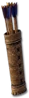

Heyday

Replenishing Quiver
Arrows
Required Level: 6
Adds 2-8 Damage
+10% Increased Attack Speed
Replenishes Quantity
Unique Arrows
Replenishing Quiver
- Type
- Arrows
- Base
- Arrows
- Required level
- 6
- Item level
- 1
Other unique Arrowss
- Quiver of Piercinglevel 35
- Quiver of Slayinglevel 65
- Quiver of Amplified Slayinglevel 85
- Quiver of Resistance Slayinglevel 85
- Quiver of Pestilencelevel 85
- Crescendolevel 80
- Rogue Scout Arrowslevel 15
- Hunger of the Junglelevel 30
- Reach of Mephistolevel 70
- Siege Beast Arrowslevel 90
- Enfeeblement Arrowslevel 45
- Flightlesslevel 7